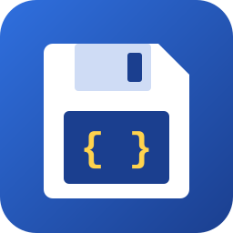

Save File Decoder
Drop in a game save (.bin, .sav...) to see everything inside as a searchable list or as JSON.
Handy utilities that run right in the browser. Each one is a self-contained project - pick one below to open it.
